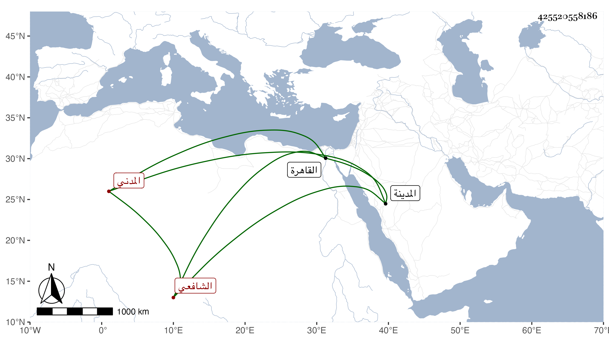

0902Sakhawi.DawLamic.ITO20230111-ara1.EIS1600.425520558186
Biography ID: 425520558186
138
عبد الرحمن بن إبراهيم بن عبد الرحمن بن حسين الزين بن البرهان المدني الشافعي الماضي أبوه ويعرف كسلفه بابن القطان . نشأ بالمدينة فحفظ القرآن وغيره واشتغل وقرأ الحديث وتعانى النظم وامتدحني بقصيدة قيلت بالروضة النبوية بل قرأ علي في صحيح مسلم ، وسمع علي ومني أشياء وقدم القاهرة غير مرة ، ومات بها في شوال سنة سبع وثمانين ودفن بحوش الصوفية وأظنه زاحم الأربعين ، وكان ذا همة وطلاقة عفا الله عنه .
